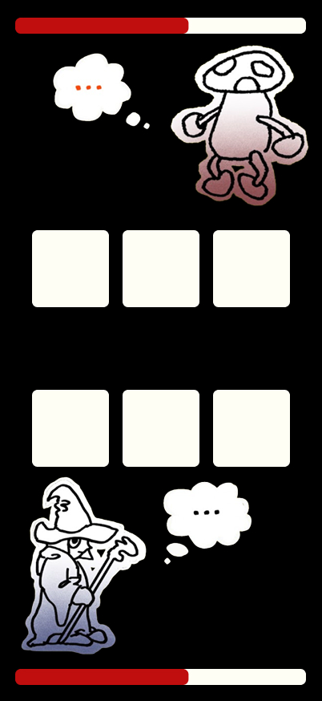
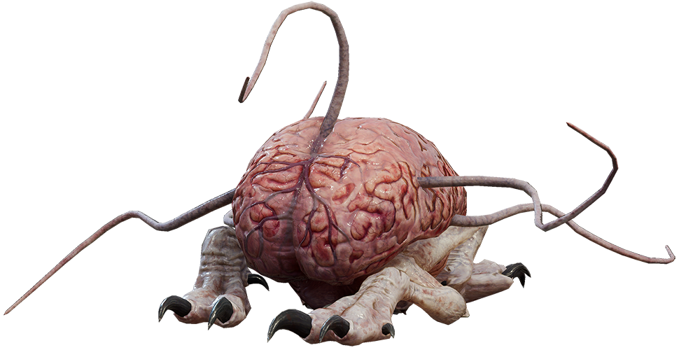
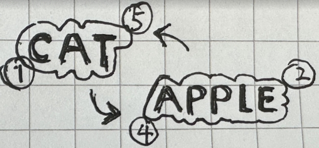
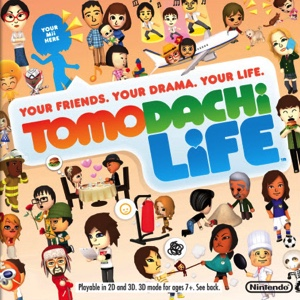
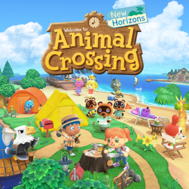
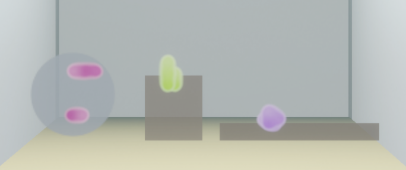
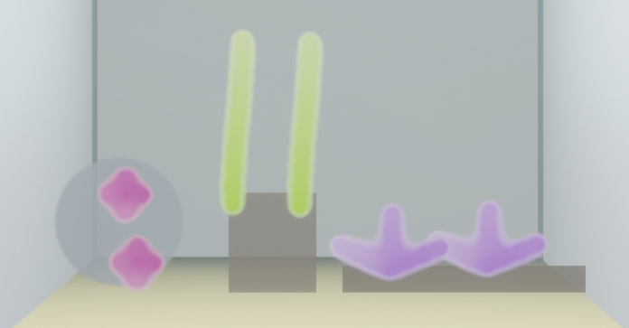

Dev Log
A nurture game where you feed words to a slime creature — words become its body, identity, and personality. AI generates reactions, evolution, and relationships. Tracking the winding road from concept to playable build.
A nurture game where you feed words to a slime creature — words become its body, identity, and personality. AI generates reactions, evolution, and relationships. Tracking the winding road from concept to playable build.

Minecraft-like building where you and an AI agent co-create structures. Every voxel is named — Wood, Rock, Flower, Ruins Stone — and the AI understands what they are, suggests changes, and reasons about the scene in natural language.
First buildable thing: async two-phase card combat with an AI dungeon master (Shroomking). Players and AI commit cards blind, then react. AI generates bluffs and taunts.

 ▶
▶
Text-first pivot. Player declares a belief. A hidden Guard has a contrasting one. You build word + card combos to shake its worldview. AI judges impact and writes Guard dialogue as your only clue.
Came back to the original image. Tried combining word semantics with a top-down dungeon and a voxel creature. The roguelite structure gave each run a different vocabulary.

The creature eats words. The words become its body. The body is the weapon. Semantic relationships between adjacent word-blocks determine combat — AI generates those rules once, permanently, from language.
Words are not labels. Words are physics.
Real-time tile-based combat. Two creatures made of word-blocks move toward each other. Contact triggers damage every 2.5s. Adjacency creates permanent semantic rules — Moon next to Rot amplifies it, because that's what a language model understands Moon and Rot to mean.


Porting the design into Unity 2D URP. Grid-based movement, word-block creatures with 3-7 expandable slots, real-time contact combat settling every 2.5s. 14 words so far (Grass, Stone, Apple, Snake, Moon, Rot...) each with base stats and distinct colors.
Adjacency modifiers already work: Poison buffs Snake, Moon multiplies Rot, Ice reduces attack. Player defeats 3 enemies per run, absorbing their blocks to grow. Edit mode (E key) lets you rearrange your creature between fights.
Suggested by lab members — games that share a design axis with what we're building.
Feed words to a creature and it evolves based on what you feed it — cute words produce cute forms, aggressive words produce aggressive forms. Built on the Japanese concept of kotodama (words carry spiritual power).
Why relevant: Direct precedent for words-as-mechanic. Word choice produces branching, measurable outcomes — not narration.
Draw and place terrain tiles that must match adjacent edges. Place followers on completed features (cities, roads) to score. Adjacency and enclosure drive all strategy.
Why relevant: Proves that edge-matching placement rules create deep emergent strategy. Our word-block adjacency system is the same principle — what you place next to what determines everything.
Freeform spaceship construction in real-time. Scavenge parts from destroyed enemies and bolt them onto your own vessel. In co-op mode (Captain Together), multiple players build a shared ship piece-by-piece while flying and fighting.
Why relevant: Build-from-loot loop matches our absorb-enemy-blocks mechanic. Structure of your ship directly determines combat capability — same as our word-block creature topology.
Build medieval siege machines from modular blocks — wheels, blades, hinges, bombs — each physically connected to a core. A poorly balanced machine collapses; a well-designed one is lethal.
Why relevant: Validates that topology of construction (what connects where) drives combat effectiveness. Arrangement matters, not just inventory — same principle behind our adjacency modifier rules.
Major direction shift recorded in design docs v9 (v3.0) and v10 (v4.0). The creature stops being a combat vehicle and becomes a pet. The word "fight" disappears from the core loop; "feed" and "watch" take its place.
What stays: grid system, core/shell structure, internalization, fusion, expression system, evolution. Same foundation — different interaction posture.
What's new: micro-behaviors (idle bob, blink, curiosity lean, recoil), taste/preference system (like / neutral / reject that sharpens over time), and a commercialization path (rare word packs, decorations, seasonal words).
Dropped: directional attacks, enemy AI, combat UI, functional zones. All remain as future expansion if needed.
Added the internalize feature to the Unity build. An attached word-block adjacent to the core can now be permanently absorbed — it disappears from the shell, becomes a new core cell, and its stats + rules merge into the core pool. The operation is irreversible, matching the design doc's "every decision permanently shapes the creature" philosophy.
This is the first nurture-direction feature in the engine. With internalization working, the creature can now grow — setting up the path toward fusion, evolution, and eventually the taste/preference system from v10.
Engine is 100% combat-oriented — GameManager tracks kills, SpawnManager generates enemies, main loop is fight → loot → equip. Nurture direction has zero code presence. Planned 3 steps to minimum viable nurture: micro-behaviors → taste system → word refresh.
Wrote the comprehensive design document (22 sections, ~4k words) that crystallizes every system in the nurture direction. The creature is now a slime with a stomach — eaten words physically appear inside its translucent body, reshaping it. The player is an invisible "God Hand" that clicks, drags, and nudges — no avatar, no WASD.
Key leaps from v10:
Scope: hatching → first evolution, ~15 min session. Success metric: "Can the player tell you what their creature likes to eat?"
A printable game introduction card for playtests. Three-panel visual narrative — pick a word, feed the creature, wonder what it becomes. No stats, no combat, just the core nurture loop in one glance.
Ran the first external playtest — earlier than ideal (no tutorial, nurture loop incomplete). Had to explain verbally throughout. Several clear signals emerged.
What worked: The word crafting/fusion concept itself resonated. Multiple testers were drawn to combining words and wanted to see what would come out. The core premise — feeding words to a creature — landed as intriguing.
What didn't:
Design implications:
Post-playtest design session. Three attempts to replace ATK/HP with something that makes feeding meaningful:
Attempt 1: Essence Axes. 4 continuous axes (Heat, Life, Light, Fury). Failed — "Mirror" has no meaningful position on a Heat axis. Just stat math in a new costume.
Attempt 2: Element typing. 5 elements (Wood / Fire / Earth / Metal / Water) with synergy and conflict cycles — like Pokémon types, every pair has a defined interaction. Problem: Apple and Tree are both Wood, so the creature can't tell them apart. Words become empty shells for element tags.
Attempt 3: The breakthrough — words ARE the creature's identity.
Key insight: don't abstract words into numbers at all. The creature that ate Snake + Fire + Poison IS a venomous fire serpent. Three layers make this work:
The creature's first word sets its core element. Subsequent words relate to that core: nurturing, reinforcing, creative, challenging, or prey. Each type shapes the creature differently — nuanced tradeoffs, not binary like/dislike.
Replaces: ATK/HP stats, 13 hardcoded rules, tag-based affinity, flat numerical stats.
Preserves: word crafting/fusion, feeding as core verb, visual transformation, God Hand, digestion pipeline.
Same session, second breakthrough. Still designing too many systems. Kept cutting until only the fun parts remained.
Cut: adjacency strategy (cosmetic only), map ecology (deferred), complex combat (autobattle: element matchup + size), per-word HP (creature is one being), excessive player choices.
What remains — three loops:
Element system simplified to three jobs: feeding reaction type, creature-to-creature relationships, and hidden ecosystem balancing (world spawns what the creature needs).
Fusion redesigned: two words "birth" a new word. AI generates a child influenced by the parents' element relationship — synergy = smooth birth, conflict = surprising/rare result.
Key design detail: pre-evolution creature is formless slime. Evolution gives it a body plan. Shape comes from word semantics (what it IS), material/texture from element balance (what energy it carries). Same serpentine body + fire vs water = completely different creature. Each word leaves a mark where it was absorbed.
Implemented the element + semantic identity data layer in one session. Data model shifted from numeric stats to elemental identity.
[Obsolete]./react endpoint: creature's word list + new word + relationship type → reaction + excretion word + intensity via Claude Haiku. Local stub fallback.Rewrote the creature rendering from scratch. The old 3-layer system (back outline → tile sprites → front jelly overlay) was visually disjointed — edges and fills were separate objects that didn't know about each other. Replaced with a proper SDF approach using smin smooth minimum fusion.
How it works:
smin() smoothly merges adjacent cells, creating organic bridging between tiles instead of hard grid edges. _Smooth parameter controls how much cells stick together (0 = independent, 0.5 = water-drop bridging, 1.0 = blob)._ColorBlend), so neighboring cells smoothly transition instead of hard-cutting at tile boundaries.Five days: one pivot, one playtest, one framework breakthrough, and the first buildable nurture loop.
Playtest confirmed: word fusion is the hook, combat steals the focus. Creature should be a pet, not a weapon.
Three failed attempts at replacing ATK/HP. Breakthrough: don't abstract words into numbers at all. The creature that ate Snake + Fire + Poison IS a venomous fire serpent.
Cut everything else. Map ecology, adjacency strategy, per-segment combat — all deferred. Only the fun parts remain.
The Week 3 plan had a hole. Evolution turns a blob into a serpent or a crab — but the current body is a bag of grid cells with no topology. You can't point to "segment 3" of a bag. Adjacency strategy, local mutation, per-part decoration — all of them assume a body plan that doesn't exist yet.
Opened a new scene, BodyPlanSandbox.unity, with zero dependencies on the main game. Goal: find one data structure that can describe every body we might want to evolve into, and make "segment N" an addressable thing.
The current main scene — the starting point we’re diverging from:

Every body plan I cared about collapses into three parameters: spine length, appendage pattern, chain length.
Built all five as parametric plans under an IBodyPlan.BuildSkeleton() interface returning a BodyNode tree. Physics assembly (Rigidbody2D + HingeJoint2D chains) is shared; the plan only returns topology. Keys 1–5 swap plans live. Gait templates drive each node with a sin-wave torque keyed by gaitPhase + gaitAmplitude — serpent undulates, crab alternates diagonal legs, centipede ripples metachronally.
Second insight, once topology was addressable: decorations should hang off semantic slots, not coordinates. The body mutates; horns, fins, claws can’t anchor to absolute positions.
Locked a small slot vocabulary: HEAD, TAIL, LIMB_TIP[i], SPINE_MID[i], BACK/BELLY, SURFACE. Each body plan declares which slots it exposes. Parts declare which slots they can attach to (horns→HEAD|SPINE_MID, fins→BACK|TAIL). When the body evolves, parts re-resolve — matching slot survives, otherwise graceful fallback to SURFACE or suspension.
Same protocol covers both grown (earned by eating) and worn (player-attached) decorations. Delta between the two is two fields: source and detachable. One system, two content pipelines.
The Apr 17 ragdoll prototype looked plausible for ten seconds, then fell apart. HingeJoint2D chains wobbled unpredictably under torque, legs spun into knots, tuning one plan broke the other four. Physics joints are not the abstraction this game wants.
Scrapped it. Rebuilt locomotion from two pieces: Rain World’s position-based Verlet for the body, flOw’s MoveTowards head-seek for steering.
Each node holds pos / prevPos. No joints, no forces. Distance constraints between parent and child are solved iteratively each frame — trivially handles branching topology (octopus, crab, spider all fall out the same way). The head is pinned (invMass = 0) and everything else is pulled along by constraint propagation.
Head does MoveTowards(moveTarget, speed * dt) every frame. It deliberately under-shoots the cursor — so when you circle the mouse, the head traces an arc, and the Verlet body ripples behind it. The entire "swimming" feel comes out of that one line.
The first gait attempt rotated each edge by (sin(time + phase) * amplitude) in place. Drift compounds: nodes accumulate tiny rotation errors every tick, and within 30 seconds a centipede twists into spaghetti.
Fix: every node stores restAngleInParentFrame. Each iteration, the target position is recomputed from scratch — parent’s current heading + stored rest angle + gait sin offset. Nothing persists between frames. No drift possible.
Not every node wants the same stiffness. Limb roots snap rigidly to their mount point (anchorStrength, high) so legs don’t collapse into the body. Mid-segments pull softly toward the gait target (gaitPullStrength, low) so they lag and swing naturally.
Blob fill uses Vogel’s sunflower spiral instead of concentric rings — arbitrary N becomes a uniformly packed disc with no visible concentric banding.
Late in the day a further collapse. All five parametric plans from Apr 17 are actually one plan with three dials: (blockCount, limbCount, bodyRatio). limbSegs auto-distributes from the remainder.
limbCount = 0limbCount = 1, bodyRatio = 0limbCount = 4, bodyRatio = 0.25limbCount = 8, bodyRatio = 0.1Verlet gave us skeletons. Now they need a body. Wrote Custom/VerletEnvelope, a shader derived from SlimeBody that SDFs every spine/limb node as a circle and smins them into one continuous surface. Per-node radius + color pushed into a float4[] each frame; one quad sized to the AABB renders the lot.
Step 1 (blob-only smin) is in. Step 2 (per-group smin so limbs read as distinct) left for later — the _Nodes[i].w slot is already reserved. E key cycles Debug / Envelope / Both so I can see what’s happening underneath.


Three components, all parented to the Verlet head node, Inspector-tunable without entering Play mode:
SetEating(true) opens it, Speak(seconds) runs a sin pulse + phase-offset wobble so it looks like actual talking.Say(text, duration) pops 1–3 trailing bubbles. Main bubble is a 9-slice that auto-fits the TextMeshPro label; trailing bubbles space along the direction vector by bubble-edge distance so long text can’t push them outward.alignToHeading + reverseFaceAxis parameters let me set "eyes-front" or "eyes-back, mouth-leading" per creature. Current default is the fish/slime style: mouth leads, eyes trail.BodyLimbs got upgraded until it could replace all five legacy plans on its own. Added spineLength (extends a -X chain from the head with soft gait = serpent undulation) and per-limb limbAttachSpineIndex (mount a limb on any spine node = centipede). Sandbox GUI got a "Distribute on spine" preset: click once, 2N limbs pair across the spine at 90°/270°, instant centipede.
Further refinements the same day: split limbCount into headLimbs + spinePairs, added spineSpread (how tightly spine pairs pack), headLimbSpread (insect antennae vs starfish arms), spineThickness (radiusScale on head/spine so smin reads a chunky torso vs thin legs). Pink/cream head limbs vs cyan/orange spine limbs for visual disambiguation during tuning.

Had a persistent issue: centipede head would turn sharply but the spine stayed pointing the wrong way. Root cause: head limbs collision-pushing against the spine on tight turns. Fix: every node gets a collisionGroup (0 = head cluster, 1 = spine cluster), and same-creature cross-group pushout is skipped. smin’s natural fusion handles the visual overlap. Spine now turns with the head.
All BodyLimbs fields moved off the Inspector onto an OnGUI panel (G toggles), with ApplyPlanLive doing in-place param updates when topology matches and a full rebuild only when the skeleton changes. Mouse-over-panel suppresses world-click so I stop accidentally sending the creature walking when I’m just sliding a slider.
The Week 3 plan ended at "drag word into mouth, creature internalizes it." That’s feeding, but it isn’t nurture. The first playtester’s complaint was sharp: "I fed it, but nothing happened that was up to me."
Phase A is the minimum loop that answers that complaint. Every word eaten triggers a choice bubble with 3 growth options. Pick one — the creature visibly changes. That’s the loop. Running in the sandbox, compiles clean, awaiting playtest validation.
Five orthogonal dimensions of BodyLimbs become five player-facing choices, never mixed:
SpineLength — serpent: extend spine by one nodeHeadLimbs — crab: +1 head limbSpineLimbs — centipede: +1 spine limb pair. Auto-adds a spine node if none exists.Thickness — chunky: bump spineThickness one tier (chunkier torso)HeadMass — blobby: +1 body-cluster node around the headHardcoded lookup table — 14 words, 3 GrowthOptions each. Deterministic, testable, easy to rebalance. AI replaces this later via /grow_options(word, state), with the hardcoded table staying as fallback.
Reused VerletBubble’s 3-bubble AskChoice pattern. Main bubble widens to fit 3 TextMeshPro icon glyphs; hover scales each glyph; left-click selects, right-click cancels. Edge case that bit me: on the frame the bubble dismissed, the sandbox’s click-to-move picked up the same click and sent the creature walking. Fix: IsAsking stays true for one extra frame (Time.frameCount == _askEndFrame).
Chose spine-length? Topology changed — need to rebuild the skeleton. That’s an instant snap, which is ugly. SandboxPoof plays a gradient circle over the head during the swap — covers the snap long enough to read as a growth flash. Placeholder; Phase B replaces this with real skeleton-diff interpolation (new nodes scale up from parent position, deleted nodes scale down out).
F-key eating was calling SetEating(true) every frame while held, which overwrote the Speak() pulse from Q-feed. Changed to KeyDown/KeyUp transition — external callers can now run their own mouth animation without contention.VerletBubble upgrade to TextMeshPro revealed an offset drift: child bubbles were spacing by text-center distance, so a long word pushed trailing bubbles off to infinity. Rewrote spacing as edge-to-edge projection along direction vector; text length no longer escapes.Two acts: body got a topology, then the grid got replaced.
The creature isn’t just a pet — it’s a tool for the tank. Evolution unlocks abilities that let the keeper tend new substrates, which produce new food, which seeds new evolution paths.
Framing questions for Friday’s Show & Tell — both emerged from the Apr 22 pivot and shape what the rest of this summary answers.

axisBias instead of player quiz.The biggest cut, and the whole reason for the pivot. A word is a riddle; a food is a thing.
The word doesn’t vanish — it gets gated. As the creature evolves, its palate widens and preferences sharpen. Rare foods become long-term goals: "raise a creature that can eat diamond" is a multi-fork play, not a first-day option.
.png)
.png)

The mockups show what it looks like; this pictogram shows what moves. Creature’s side only — the keeper layer is deliberately left as a ghost at the bottom.
Eight-slide cold-context introduction. The game, two pivots, the ecosystem loop, what you do, the AI architecture, who it's for, where this goes, open questions. Click Launch for full-screen presentation (arrow keys, ESC to close).
Raise a creature that only speaks the language you teach it.
Each pivot moved AI from decoration toward the creature's actual mind.
Food's geometry becomes the creature's body.
Your words. AI generates concepts, you name them.
Affection unlocks new teaching moments.
A 25-year lineage with a proven path to scale.

The egg pet that started the genre.

Strange, tender, audience leans heavily female.

Calm games can hit billion-dollar scale.
Two main pieces this week: food now spawns on substrate as a Verlet patch with shape-typed particles, and the creature can speak using only the words the player has taught it. A playtest at end of Apr 29 flagged three readability issues for next session.
Last week ended on "how does AI earn its keep?" and "how to make AI-driven evolution?" — this week kept both alive and added a third about whether the food layer reads as a system.
Food now spawns on substrate as a small Verlet patch — particles anchored to a stone. Each particle has a shape role: spine, cluster, or limb. Eating a spine particle grows the creature’s spine; cluster grows body count; limb grows head limbs. So different food mixes grow into different shapes.


Same skeleton, different diets — the silhouette records what was eaten:
Three of four quadrants are running in code. Poop → new substrate is still on paper.
End-to-end: player teaches a word, AI runs /babble using only the player’s vocab, creature speaks it back with a mood.
vocab.Teach("Moss"/"Eat"/"Good") × 3 → pluck a Moss patch → eat → bubble shows "Eat Moss. Good." + face shows happy mood. Tier-based fallback if vocab thin: full sentence → food + 1 word → food alone → pure babble ("ba lu mm").Each utterance comes back with a mood; the face overlays it. Three states wired so far — happy, excited, curious. Playtest revealed the deltas are too subtle to land in 1.6s, so tuning is still in progress.
Played the build at end of Apr 29. Three issues to address next session:
Programmatic test (60s mood) showed the squint. At 1.6s in real play, no one saw it. Either the duration is too short, the blink is eating mood frames, or the deltas are too subtle.
"Eat Moss. Good." is grammatical but not meaningful. Templates slot-fill nouns; they don’t read state. Repeated same-food eats should escalate — "Yum!" → "More?" → "Full."
She expected: feed unfamiliar food N times → creature pops a "?" question → player picks a word → binds. Currently teach is purely player-initiated. The creature should ask.
recentEats tracker + AskChoice /wonder analog client-side.The parrot/baby register feels right but the templates flatten it. Has anyone shipped baby-talk dialogue that scales past 8 words and still reads as a personality? Examples?
For mood signals on a small face: which physical readouts land fastest in 1–2 seconds? Eye shape? Mouth? Body posture? Something else? — the readability budget is tiny and the playtest just confirmed it.
The casual / patient / often-female lineage (Tamagotchi → Tomodachi → AC) — how does that end of the genre spectrum read in 2026? Has the market matured, gotten quieter, or shifted entirely?
The week the loop closed on paper. Universal poop currency replaced typed poop; three bottle channels (substrate / food / tank expansion) spec’d for the spend side; the demo got a real ending — the creature asks “Who am I?”, the player names it, then it sings happy birthday to itself. Singing system shipped, art direction locked after seven prompt rounds, backend got a Path A reorg.

/compose-song — runningLast week ended on three readability cracks (mood not visible, utterances feel hollow, naming flow missing). Playtest at the start of this week added a fourth, larger one: the player has no clear goal in five minutes. This week’s hypothesis asks whether closing the cycle actually answers that.
Last week the loop had three live arms and one dashed arm (poop). This week the dashed arm got a concrete spec: poop is a single universal currency, and three bottles inside the tank consume it — one for new substrate, one for cultivating new food, one for widening the tank. Output is randomized; allocation is automatic. The loop closes — on paper. The bottle mechanic itself is build-next-week.
Each bottle is a poop counter sitting inside the tank. Poop drops auto-allocate across the three. When a bottle fills, an animation plays and the bottle yields its output before resetting. Substrate and tank-expansion outputs are random from a small pool. The food bottle has soil inside — new food visibly grows in it before it’s released into the tank.
The singing system runs end-to-end now. Client posts vocab + mood to /compose-song; the LLM (Claude Haiku) returns nursery-rhyme phrases composed only from words the player has taught; the creature sings them at C-major scale, semitone-quantized. Each note has an Animalese-style consonant onset followed by a held vowel sustain — “happy” reads as h+a, “you” as a held vowel without onset.
Atmosphere got a layer too: a vertical back-gradient (warm top / cool bottom), ambient dust particles confined inside the tank by collision, and three independent diagonal light shafts on staggered fade cycles. The empty tank now reads as a place, not a stage.
Seven prompt iterations on substrate art (May 3–7) converged on a Moebius-soft direction: matte porcelain / frosted sea glass / jade family, full value range with strong directional light defining volume, no cel-shade hard edges. The full iteration history is in log/art-style-mockup-refinement-2026-05-07.md.

Earlier rounds chased semi-realism and landed in the uncanny valley. v5 keeps the silhouettes of stones and driftwood but replaces their surface with non-photoreal materials — making them feel like objects in a glass cabinet, not unconvincing simulations of nature. The two shots above are timestamped the 7th and 8th, but the actual implementation work landed across May 6–7: organic substrate sprites swapped in, soft contact shadows under each, sand caustics on the floor, water-surface planar reflection, and the simplified single-tone poop visual.
A playtest at the start of the week and a 1:1 follow-up surfaced four overlapping concerns. Not separate complaints — the same gap viewed from different angles. The build was technically working but missing a sense of purpose for the player.
Players didn’t care about evolution results, didn’t treat naming as meaningful, clicked around without forming a relationship with the creature. Mechanics worked; the feeling didn’t land.
Five minutes of feeding gives no sense of progress. What is the player trying to achieve? When does anything end? Without a target, it reads as “just doing things.”
Differences after each evolution are real but visually subtle. Players don’t notice unless they know what to look for.
Feed, watch, evolve — what’s connecting these pieces? The poop → substrate cycle wasn’t built yet, and that absence was felt.
Demo day is May 18 — ten days out. The build window targets two main pieces: the bottle mechanic (closes the loop in code) and the language progression with a real ending (gives the demo purpose). Decoration mode and substrate–food decoupling are deferred — designed but post-demo.
Does the bottle metaphor read as a single closed loop, or as three separate vending machines? Auto-allocation assumes the player wants the simulation to handle distribution — but if it’s too automatic, the cycle may not feel like the player’s.
Is “Who am I?” followed by happy birthday too on-the-nose? The risk is melodrama. The bet is that with the right pacing — pause, look, mood shift, then the song — it lands as tender rather than performed.
In a 5-minute demo with strangers, will the player stay long enough to reach the second evolution and the “Who am I?” moment? The cadence has to hit ~4 minutes — tight if the player hesitates in the first minute.